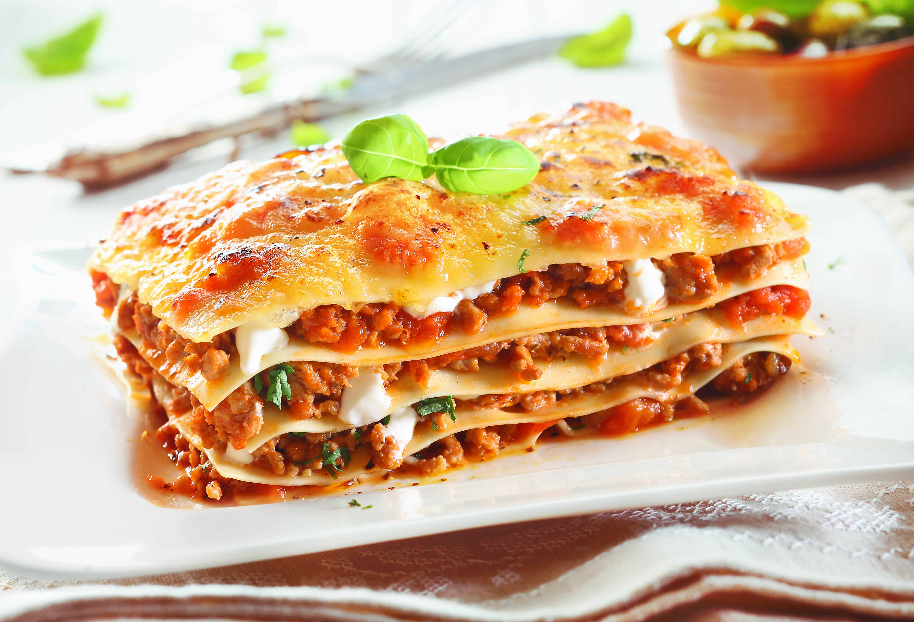

Lasagna

Description
Voici la recette des lasagnes de Manon.
Ingrédients :
- 400g de feuilles de lasagne
- 800g de viande de bœuf hachée
- 1 gros oignon
- 2 gousses d'ail
- 400g de tomates pelées en conserve
- 2 cuillères à soupe de concentré de tomate
- 2 cuillères à soupe d'huile d'olive
- 200g de fromage râpé (parmesan ou mozzarella)
- Sel et poivre au goût
- Pour la béchamel : 75g de beurre
- 75g de farine
- 1 litre de lait
- Noix de muscade,
- sel et poivre
Étapes : Préparation de la sauce bolognaise
- Faites chauffer l'huile dans une grande poêle.
- Ajoutez l'oignon et l'ail émincés et faites-les revenir jusqu'à ce qu'ils soient translucides.
- Ajoutez la viande hachée et faites-la cuire jusqu'à ce qu'elle soit bien dorée.
- Incorporez les tomates pelées, le concentré de tomate, le sel et le poivre.
- Laissez mijoter pendant environ 30 minutes.
- Préparation de la béchamel : Dans une casserole, faites fondre le beurre à feu doux.
- Ajoutez la farine et remuez pendant 2 minutes.
- Versez le lait en continuant de remuer jusqu'à ce que la sauce épaississe.
- Assaisonnez avec du sel, du poivre et une pincée de noix de muscade.
- Assemblage des lasagnes :
- Préchauffez votre four à 180°C (350°F).
- Dans un plat allant au four, étalez une couche de sauce bolognaise, puis une couche de feuilles de lasagne, et enfin une couche de béchamel. Répétez l'opération jusqu'à
- épuisement des ingrédients, en terminant par une couche de béchamel.
- Saupoudrez de fromage râpé.
- Cuisson : Enfournez pendant 30 à 40 minutes, jusqu'à ce que le dessus soit doré et que les lasagnes soient bien chaudes. Service : Laissez reposer quelques minutes avant de servir.